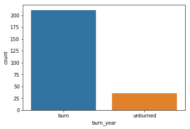

Using dataset, we are analysing the post-fire and pre-fire condition. It contains the following variables:

Total number of burned and unburned plots.
This dataset was obtained from official site of Earthdata by NASA.
Analysis was done to determine what were the dominant factors that caused fire and what how was the environment effected. There were a total of 247 data points. All the burn occured in same year of 2014.
Distribution of pima and piba(species of trees), at burned and unburned plots
The above graph shows the distribution of pima and piba(species of trees), at burned and unburned plots.
We see that at unburned plots the area of both the species is same but in burn plots, the burnt area of pima is larger than piba.
A semi conclusive statement can be made that pima may be responsible for wildfires.
Finding correlation between ecoregion and moisture class
Ecoregion and moisture class were two categorical columns in the dataset and the correlation between these two variables were obtained by using Pearson’s Chi Squared Test.
The p-value obtained was 0.002 and assuming that if p value was lass than 0.5,null hypothesis will be rejected and hence alternate hypothesis was accepted, i.e relation exist between these two variables.
ANALYSIS OF COMBUSTION OF BIOMASS
Percent combustion of bio mass
The above figure shows the percent combustion of biomass(dry matter), according to moisture class.
Two inferences can be made from above graph:1) Our initial assumption that xeric moisture class facilitates burn was wrong and we have to take more variables into account.
2) Xeric moisture facilitates burns,but not combustion of bio mass, and we should see the situation in case of carbon combustion.
Distribution of pima and piba according to moisture class

Following inferences can be made:
1)Xeric has lowest combustion percentage and xeric has a high distribution of piba.So Piba repells the fires.2)Mesic-subhygenic has a highest combustion percetage and also it has a high distribution of pima, so pima still is responsible for wildfires.
3)We can plant pima in xeric regions.
ANALYSIS OF COMBUSTION OF CARBON
percentage combustion of carbon
No inference can be made from above graph as the corbon combusted is same for all moisture class except xeric class which have a low combustion percentage.
Carbon is an important component of soil. When wildfires occur the land becomes barren and no vegetation can be planted in that area.
Percentage of carbon combustion in soil
RECOMMENDATIONS BASED ON ABOVE TWO ANALYSIS
- Pima might be responsible for wildfires.
- Plantation must be done in regions having xeric moisture class as they have alow combustion percentage,primarily piba should be planted.
- Special measures must be taken in subxeric moisture class regions as they have a very high carbon combustion percentage in soil which can leave the land barren.